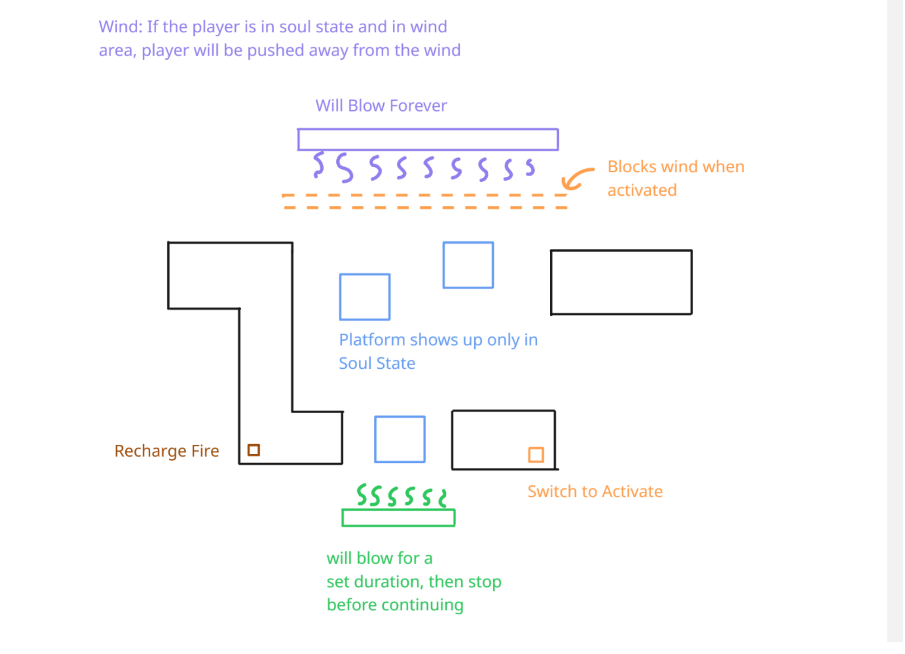
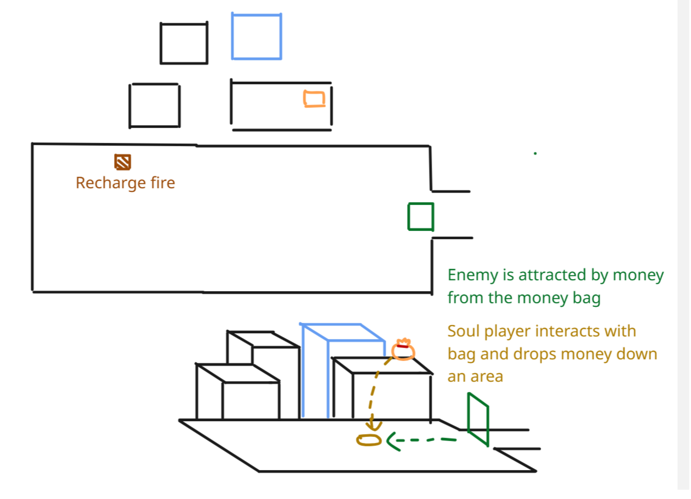
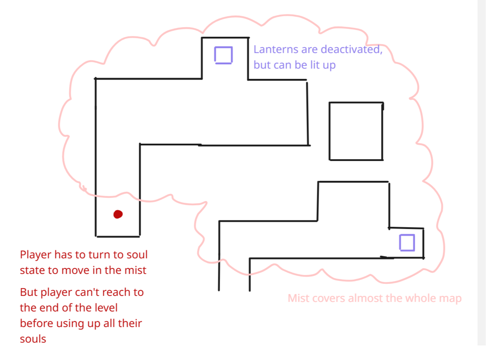
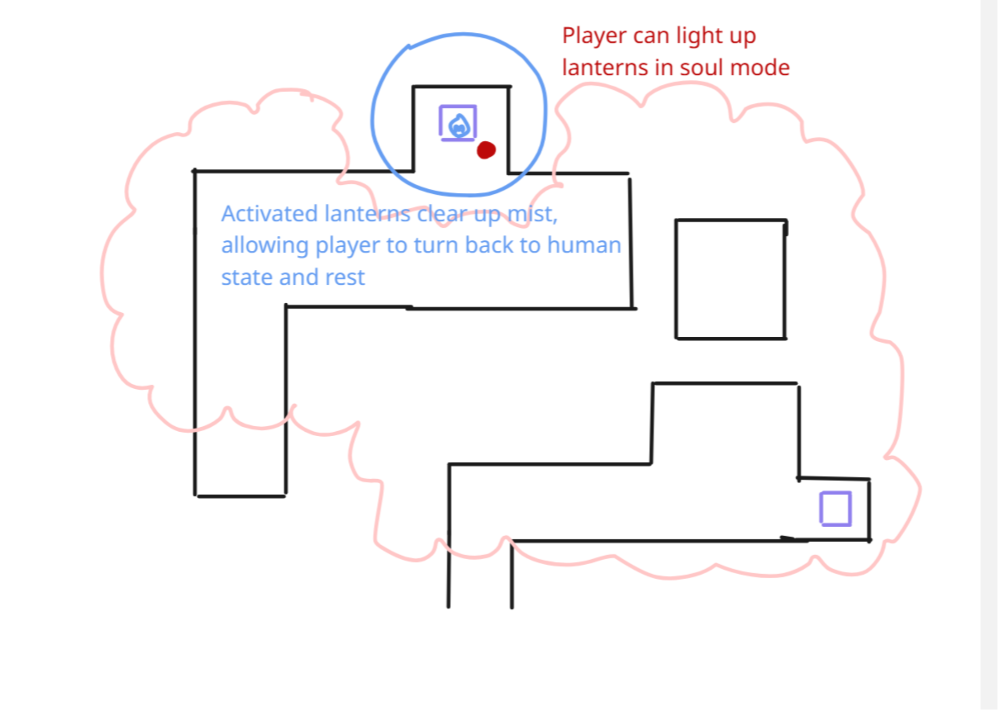
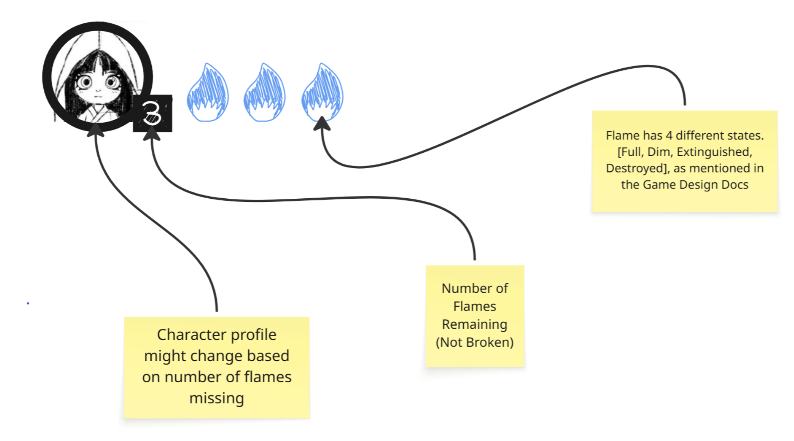
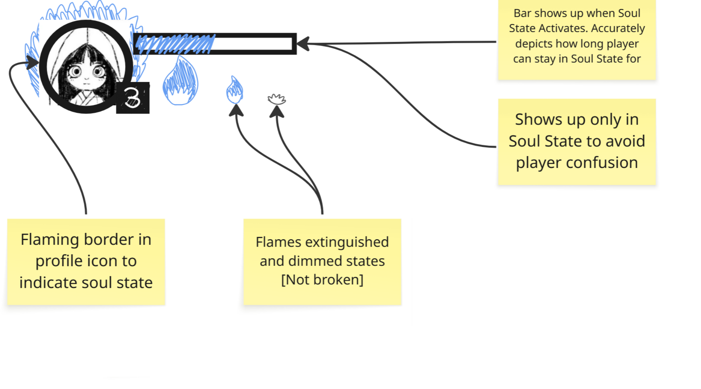
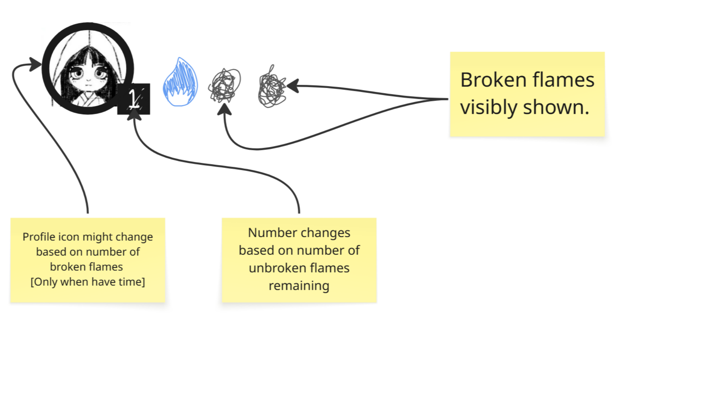
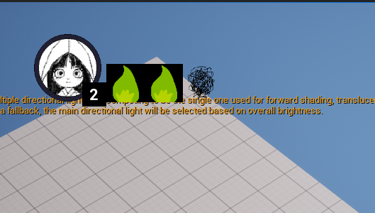

Just a Game Designer and Digital Artist.
Certified Silly Person
Blossems of the Dead
Introduction
Blossems of The Dead is an on-going final year project for my Goldsmiths University Game Design course.
The game is a 3D puzzle based platformer being developed in Unreal Engine. I am working with 3 other
team members to create this game.
The character navigates through the land of the dead, switching
between soul forms to solve puzzles, and ultimately find her deceased grandmother, wishing her one final goodbye.
I am responsible for:
Programming the game's core mechanics and systems
Mechanic Design involving soul switching
UI/UX Design for the game's interface
Narrative Design through character dialogue and overall storytelling
As the main programmer of this project, I am responsible for implementing most of the mechanics in the game, mainly using
blueprints. I also work as the Technical Designer, making sure the mechanics can be reused and can be implemented with
reasonable effort.
What is currently done
As a puzzle based platformer with state switching, I implemented a state switching system that teleports the player between
2 almost identical worlds by a press of a button. Each of the worlds have slightly different objects and pathways which
the player can explore. Some objects may even have different properties when interacted at different states.
I also experimented on the Niagara particle system and different materials to create wind effects, and created shaders for
object outline effects.
Version Control
Version control is used in this project, with Perforce as the main version control software. I was responsible for aiding
the setup of the perforce server and helping team members set up their clients.
Checkpoints, Scene Switching, Object Interaction
Mechanic Design
My Responsibility
I was tasked upon thinking about interesting mechanic designs to give more variety to the game. preventing it from
becoming just a walking simulator. Although not all ideas are chosen and implemented in the end, each idea is
thought out through creating diagrams.
My ideas
State switching is decided as the main mechanic of the game, so I suggested a multitude of sub-mechanics which revolve
around the state switching idea. Since the state switching mechanic is based on Sol Flames, I thought about how flames
can be extinguished by wind and how it can light up objects, which I expanded upon these ideas. The diagrams below
only show part of the ideas I have thought of.
Wind Planning Diagram

Youkai Planning Diagram

Mist Planning Diagram 1

Mist Planning Diagram 2

UX Design
My Responsibility
I am responsible for planning and executing UI interfaces for the game. Currently, only the game UI layout is created. However,
I will plan the layout for the main menu, pause menu, and the dialogue system in the future as well.
My Ideas
Similarly to how I usually plan UI designs, I start off with a wireframe diagram with notes, then only execute the design into
the final interface when agreed upon by the team. The wireframe diagram is shown below, but this will be updated in the future
due to the ever changing requirements already suggested by the team.
In-Game UI Wireframe State 1

In-Game UI Wireframe State 2

In-Game UI Wireframe State 3

In-Game Implementation [temp assets]

Narrative Design
My Responsibility
I will be responsible for creating narrative plot points for the game, including character dialogue and backstory
cutscenes. As of right now, no work has been accomplished yet.